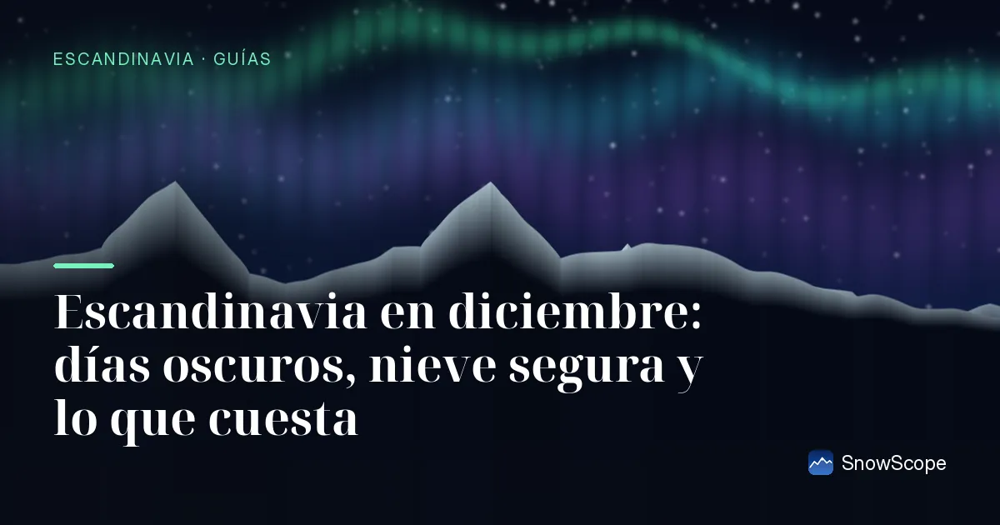

Escandinavia en diciembre: días oscuros, nieve segura y lo que cuesta
Diciembre en Escandinavia trae certeza fría y luz tenue. A media montaña en toda la región, la profundidad de nieve llega a 30 cm o más en casi todos los inviernos—del 83 % en Levi y Ylläs al 100 % en Hemavan. La trampa: días cortos, precios muy pronunciados que varían según la fecha en Noruega y Suecia, y una división norte-sur en fiabilidad.
Consulta la previsión de nieve en tiempo real de Scandinavia in December en la app SnowScopeEspesor de nieve, alertas de nieve polvo y mapa 3D, gratis.
Dónde las probabilidades te favorecen
Si esquías a media montaña, Escandinavia es predecible. Hemavan, Hemsedal, Oppdal y Geilo llegan a 30 cm o más en el 96–100 % de las semanas de mediados de diciembre en 46 inviernos. Hemavan lidera en profundidad: 82 cm es típico el 15 de diciembre a media altura. Las media montañas sueca y finlandesa le siguen: Ylläs 38 cm (promedio en toda la zona baja), las pendientes inferiores de Hemavan 82 cm, la zona media de Hemsedal 70 cm.
Las altitudes inferiores y los centros del sur son más arriesgados. Sälen, el centro más bajo y más meridional sueco, ve 30 cm o más en solo el 48 % de las semanas de mediados de diciembre. Idre Fjäll logra el 65 %, Åre el 89 %. El patrón es claro: sube más o ve más al norte para certeza invernal.

Semana de Navidad versus principios de diciembre
Principios de diciembre es una apuesta en el sur. A media altura de Sälen, solo el 48 % de los inviernos tuvieron 30 cm el 15 de diciembre en la semana del 15–21 de diciembre. Espera. La semana de Navidad (22–28 de diciembre) es mucho más segura: el 61 % de los inviernos entregó 30 cm en Sälen entonces, y el 98 % en media montaña de Hemsedal y el 98 % en Geilo. Centros del norte como Hemavan siguen siendo consistentes: 100 % en ambas semanas a media altura.
En la cumbre en todos los centros, diciembre es prácticamente garantizado. La cima de Hemavan (1136 m) ha visto 30 cm o más en el 100 % de las semanas de mediados de diciembre y de Navidad por igual. Planifica un viaje de principios de diciembre al norte o a cotas altas; planifica un viaje de semana de Navidad a cualquier lugar.
La apuesta vertical: base versus cima
Los centros con mucho desnivel fuerzan una elección. Hemsedal cae 800 m de cima a base; Hemavan 674 m; Oppdal 742 m. En la base a mediados de diciembre, la fiabilidad de nieve cae bruscamente. El valle de Hemsedal (640 m) alcanza 30 cm en solo el 57 % de las semanas de mediados de diciembre; su cumbre (1439 m) lo alcanza en el 100 %. La base de Oppdal (585 m) llega al 93 %, pero eso tampoco es seguro. Los centros más planos con menos desnivel—Sälen, Idre Fjäll, Levi, Ruka—evitan esta división pero empiezan más bajos en general.
La semana de Navidad estrecha la brecha. En la base de Hemsedal, el 65 % de los inviernos alcanzó 30 cm o más en semana de Navidad, arriba del 57 % a mediados de diciembre. Planifica bajadas desde base para Navidad; planifica media montaña para cualquier semana de diciembre.
Tendencias a largo plazo: el norte se mantiene estable
En los últimos 15 inviernos (2011–12 a 2025–26), los centros del norte mantuvieron su nieve. Las semanas de Navidad de Hemavan siguen entregando 30 cm a media altura en el 100 % de los inviernos; Levi en el 100 %; Hemsedal en el 100 %; Ylläs en el 100 %. Oppdal y Ruka lograron ambos el 93 %. Pero los centros bajos del sur se han debilitado. Las semanas de Navidad de Sälen bajaron al 47 % de los inviernos con 30 cm a media altura, bajando de cuotas más altas en el registro completo de 46 inviernos. Idre Fjäll está en el 60 %.
Este cambio importa para la planificación. Si tienes flexibilidad, reserva al norte o en cotas altas. Si debes esquiar en el sur en diciembre, elige la semana de Navidad y reserva una bajada a gran altitud.
Precios: Finlandia fijo, Noruega y Suecia fluido
Finlandia publica precios fijos y se mantiene en ellos. Levi cobra EUR 60 el día (o EUR 57 si lo reservas online 14 días antes), Ylläs EUR 60 (EUR 55,50 hasta el 11 de diciembre), Ruka EUR 58 el día o EUR 265 por 6 días. Puedes planificar un presupuesto y reservar con seguridad.
Noruega y Suecia utilizan precios dinámicos fijados por fecha. Geilo muestra NOK 590 (aproximadamente EUR 56 al tipo de cambio del 12 de noviembre), pero Trysil, Hemsedal, Hafjell, Oppdal, Åre, Sälen, Idre Fjäll y Hemavan no publican precios fijos en sus tiendas online. Reserva pronto y online; evita la semana festiva de Navidad si el coste importa.
Luz natural: planifica alrededor de la oscuridad
La luz de diciembre se reduce a medida que vas al norte. El sur de Noruega y Suecia aún tienen unas pocas horas de luz real; Laponia finlandesa entra en la noche polar. Levi y Ylläs están en la oscuridad durante parte de diciembre, cuando el sol no sube por encima del horizonte. Es espectacular pero frío, y reduce mucho las horas de esquí. Empieza antes del amanecer si quieres luz por la tarde; lleva capas base gruesas y calentadores de manos; espera que las pistas permanezcan congeladas.
Los centros a media altitud en Noruega y Suecia centrales están mejor. Geilo, Oppdal y Hemsedal tienen más horas de luz que el lejano norte pero aun así mucho menos que el verano. Planifica tus mejores bajadas antes de comer y baja en telesilla si las condiciones se oscurecen.
Consejos para esquiadores
- Para un precio fijo con el que puedas presupuestar, elige Finlandia: Levi, Ylläs y Ruka publican forfaits diarios y multiday sin sorpresas.
- En Noruega y Suecia, compra forfaits online y reserva pronto; los precios cambian con la fecha y son más altos en la ventana festiva de Navidad.
- Elige media montaña o cotas más altas para certeza en diciembre; las bajadas desde base son más seguras en semana de Navidad que a principios de diciembre.
- En centros del sur (Sälen, Idre Fjäll, Åre), espera hasta la semana de Navidad; centros del norte (Hemavan, Ylläs, Levi) son fiables desde principios de diciembre.
- Los días de diciembre son cortos: empieza a primera luz, come rápido, y comprueba el boletín avalanchero nacional antes de esquiar fuera de pista en la oscuridad.
Sobre estas cifras
Los espesores de nieve de las estaciones son la nieve más profunda en las pistas altas en la fecha indicada; son estimaciones para una zona, no una medida en un punto. Las previsiones pueden cambiar. Consulta siempre el boletín oficial de aludes antes de salir fuera de pista.
Citar este informe
Para investigación, docencia o prensa: cifras y gráficos reutilizables libremente bajo CC BY 4.0 con esta cita.
SnowScope (2026), Escandinavia en diciembre: días oscuros, nieve segura y lo que cuesta, https://snowscope.app/blog/es/2026/11/scandinavia-december-skiing-dark-days-sure-snow-cost.html, consultado el 2026-11-14
SnowScope (Atlas Labs). (2026, November 14). Escandinavia en diciembre: días oscuros, nieve segura y lo que cuesta. SnowScope snow reports. https://snowscope.app/blog/es/2026/11/scandinavia-december-skiing-dark-days-sure-snow-cost.html
BibTeX
@misc{snowscope2026scandinaviadecemberskiin,
author = {{SnowScope (Atlas Labs)}},
title = {Escandinavia en diciembre: días oscuros, nieve segura y lo que cuesta},
year = {2026},
month = nov,
howpublished = {\url{https://snowscope.app/blog/es/2026/11/scandinavia-december-skiing-dark-days-sure-snow-cost.html}},
note = {Published 2026-11-14 13:29 UTC; accessed 2026-11-14}
}· CC BY 4.0 · Métodos, datos y herramientas →
Sigue Scandinavia in December
Gratis: un aviso cuando llega la nieve y la previsión cada mañana.
Más partes de nieve

El 15 de diciembre, Hemsedal muestra 32 cm en base, 70 cm a media montaña y 106 cm en cima. La altitud lo es todo aquí.

La media montaña de Hemavan tiene 82 cm de nieve el 15 de diciembre típico. Todos los inviernos en 46 años tuvieron 30 cm o más a media altura en mediados de diciembre. Datos del 13 de noviembre de 2026.